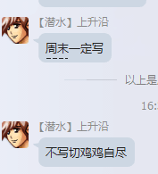

[转寄/推荐][转贴][删除][修改][设置可RE属性][上一篇][返回讨论区][下一篇][回文章][同主题列表][同主题阅读][从这里展开]
发信人: WiniM(WiniM), 信区: outdoor 标 题: 元旦攀冰回来，据说要写总结？ 发信站: 饮水思源 (2016年01月07日13:43:01 星期四) 总结只有四个字：握力不够！！！ TAT我去年到底是怎么过来的 爬了五六米就握力不行了，手掌都是酸的。。。手臂全程没有什么感觉 自我检讨穿冰爪太慢(虽然感觉是协会这款冰爪有点坑)差点被中级班班长zzm踢屁股 回城之后和高神icer还有雪姐吃了饭~虽然到的时候烤鸭已经被吃完了不开心。。。 第一次见icer~还有雪姐~ 感谢icer带我们去喝酒~虽然至今无法接受这么苦的啤酒。。。 据说这次去北京发生了很多事情？这里不提了啦 貌似高神的雪山总结还没写。。。 这是他之前在总群说的~  screen.width - 200){this.width = screen.width - 200}"> |
[转寄/推荐][转贴][删除][修改][设置可RE属性][上一篇][返回讨论区][下一篇][回文章][同主题列表][同主题阅读][从这里展开]